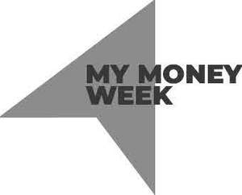

Trade Mark Journal No.2025/018 2 May 2025
UK00004187961 11 April 2025 (9,16,35,36,41)
Mark 1
Mark 2

- Class 9
- Downloadable publications; downloadable electronic publications; publications in electronic format; education and training materials in electronic format; training manuals and guides in electronic format; audio and/or video recordings; downloadable and streamable audio and/or video recordings; education and training videos; downloadable and streamable webcasts and podcasts in relation to education and training; computer software and programs; downloadable computer software; application software; computer application software for mobile communication devices. .
- Class 16
- Printed matter; printed publications; books; periodical publications; journals; instructional and teaching materials; educational publications; manuals; instructional manuals; information manuals; training books and training guides; handbooks; information lists; training documents; seminar notes; guides; charts; programmes; booklets; brochures; leaflets; newsletters; promotional publications; white papers; catalogues; certificates; printed forms; tickets; letterheads; pages downloaded from the Internet or other computer or communications networks (in paper format); photographs; prints and pictures; posters; stationery; stickers and transfers; lapel stickers; diaries; calendars; albums; files and folders; binders; note books; writing implements; pens; pencils; bookmarks; cards; paper flags and pennants; paper banners; printed matter and publications in the field of education and training. .
- Class 35
- Business management; business administration; office functions; business consultancy services; business advisory services; business strategy services; business planning services; business research services; business analysis services; business support services; business guidance services; business development services; business information services; advertising services; advertising via the Internet and other computer and communication networks; marketing services; promotional services; promotional campaigns; public awareness campaigns; promotion of public awareness in relation to business and entrepreneurship; market research services; market studies services; market analysis services; business appraisals; preparing business reports; business data analysis; business information analysis; information services relating to jobs and career opportunities; career placement; organisation of events, exhibitions, fairs and shows for commercial, promotional and advertising purposes; arranging, organising and conducting of trade shows; operation and supervision of membership schemes; retail services connected with the sale of downloadable publications, downloadable electronic publications, publications in electronic format, education and training materials in electronic format, training manuals and guides in electronic format, audio and/or video recordings, downloadable and streamable audio and/or video recordings, education and training videos, downloadable and streamable webcasts and podcasts in relation to education and training, computer software and programs, downloadable computer software, application software, computer application software for mobile communication devices, jewellery, clocks, watches, ornamental pins, lapel pins, tie clips, cufflinks, charity wrist bands, key fobs, key rings, key chains, key charms, badges, ornaments, figurines, statues and statuettes, works of art, models, trophies, plates, plaques, shields and signs, medals and medallions, coins, printed matter, printed publications, books, periodical publications, journals, instructional and teaching materials, educational publications, manuals, instructional manuals, information manuals, training books and training guides, handbooks, information lists, training documents, seminar notes, guides, charts, programmes, booklets, brochures, leaflets, newsletters, promotional publications, white papers, catalogues, certificates, printed forms, tickets, letterheads, pages downloaded from the Internet or other computer or communications networks, photographs, prints and pictures, posters, stationery, stickers and transfers, lapel stickers, diaries, calendars, albums, files and folders, binders, note books, writing implements, pens, pencils, bookmarks, cards, flags and pennants, banners, printed matter and publications in the field of education and training, household utensils and containers, chinaware, glassware, drinking vessels, cups, mugs, bottle openers, corkscrews, clothing, footwear, headgear; information, advisory and consultancy services in relation to all of the aforesaid. .
- Class 36
- Financial services; charitable fundraising; charitable collections; organising and arranging of charitable collections; managing and monitoring of charitable funds; distribution and allocation of charitable funds; financial arrangements to facilitate charitable giving; financial sponsorship services; information, advisory and consultancy services in relation to all of the aforesaid. .
- Class 41
- Education; providing of training; entertainment; sporting and cultural activities; provision of entertainment and training activities and facilities; instruction services; teaching services; coaching and mentoring services; vocational education and training; corporate education and training; business and entrepreneurship education and training; financial education; career coaching; career and vocational counselling; education and training relating to careers and employment, communications, problem-solving, decision making and team-working skills, business studies, business practices and personal finance; provision of information relating to education and training; educational research; educational consultation; design of educational courses; provision of education and training courses; certification of education and training awards; arranging, organising and conducting of courses, classes, tutorials, seminars, workshops, lectures, conferences, conventions, presentations, events, shows, displays and exhibitions; online education and training; event management services; organisation of competitions and awards; arranging, organising, hosting, presenting and conducting award ceremonies; presentation of awards for achievement; issuing of publications relating to achievement awards; audio and/or video recordings production, presentation and distribution; publishing; issuing of publications; publication of books, texts, leaflets, reports and magazines; electronic publishing services; providing online electronic publications; online information relating to education and training; publication of news; information, advisory and consultancy services in relation to all of the aforesaid. .
Young Enterprise
Representative: Wilson Gunn